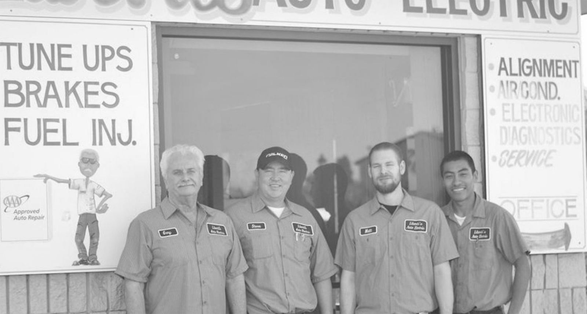

About Us
We have been in business at our original location in Milpitas, CA since 1971!
Welcome to Liberti's Auto Electric, your trusted and reliable auto repair service in Milpitas, CA. With a longstanding and strong commitment to providing top-notch service, our ASE Certified technicians are dedicated to quickly and accurately diagnosing and resolving any automotive issues, saving you both time and money.
We pride ourselves on being auto electrical specialists, well-versed in employing the latest diagnostic strategies, cutting-edge technology, and advanced tools. Say goodbye to the "guess and check" parts-changer repairs at other shops. Our skilled technicians use their expertise to pinpoint the problem with precision, ensuring that we address the root cause and fix it right the first time.
Your vehicle deserves the best care, and that's precisely what we offer. Whether it's a minor tune-up or a major overhaul, our team is equipped to handle it all. Rest assured that when you entrust your vehicle to us, we will diagnose the issue accurately, make the necessary repairs, and thoroughly verify its proper working condition before considering it "fixed."
Your satisfaction is our priority, and we take every measure to provide exceptional service. When you bring your vehicle to Liberti's Auto Electric, you can trust that it will receive the care and attention it deserves. After the repairs are complete, we meticulously verify the proper working condition of your vehicle to ensure that it is ready to hit the road safely.
As a part of the Milpitas community, we take pride in serving our friends and neighbors with dependable and trustworthy auto repair solutions. Our aim is not just to fix your vehicle but also to build lasting relationships with our customers, based on mutual trust and satisfaction.
When it comes to your automotive needs, don't settle for less. Experience the difference at Liberti's Auto Electric, where our focus on trustworthy, expert auto repair services, efficiency, and customer service sets us apart. Visit us today for reliable, expert auto repair services that will exceed your expectations.
Thank you for choosing Liberti's Auto Electric, where we care for your vehicle like it's our own. Your satisfaction is our priority, and we look forward to serving you and your vehicle with the utmost care and professionalism.